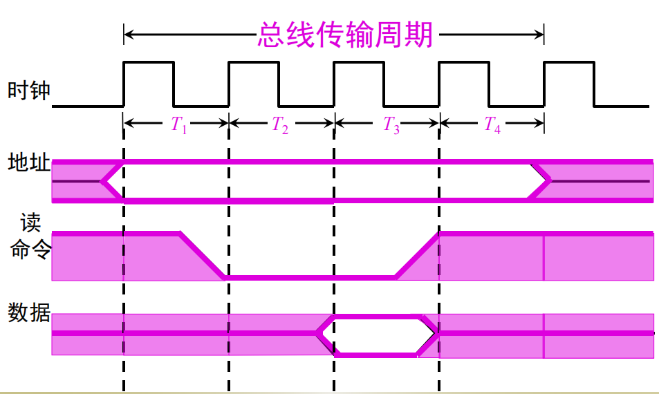

计算机组成原理第3章：系统总线
1 总线的基本概念
计算机系统的五大部件之间的互连方式有两种：
- 各部件之间使用单独的连线——分散连接
- 将各部件连到一组公共信息传输线上——总线连接
总线是连接各个部件的信息传输线，是各个部件共享的传输介质，同一时刻，只允许有一个部件向总线发送信息，而多个部件可以同时从总线上接受相同的信息。
这里有点像局域网的广播信道，同一时刻只能由一个主机发送数据，其他只能监听。
1.1 总线结构的计算机举例
1.1.1 面向 CPU 的双总线结构框图
这种结构在I/O设备与主存交换信息时仍然要占用CPU，因此会影响CPU的工作效率。
1.1.2 单总线结构框图
当主存与I/O交换信息时，原则上不影响CPU的工作，CPU仍可继续处理不访问主存或I/O设备的操作，工作效率有所提升。
由于只有一组总线，当某一时刻各部件都要占用系统总线时，就会发生冲突。
1.1.3 以存储器为中心的双总线结构框图
在单总线基础上又开辟出一条CPU与主存之间的总线，称为存储总线，只供主存与CPU之间传输信息。既提高了传输效率，又减轻了系统总线的负担，还保证了IO设备与存储器交换信息时不经过CPU的特点。
2 总线的分类
2.1 片内总线
片内总线是指芯片内部的总线，如在CPU芯片内部，寄存器与寄存器之间、寄存器与算逻单元ALU之间都由片内总线相连。
2.2 系统总线
系统总线是指CPU、主存、IO设备各大部分之间的信息传输线。根据传输信息的不同，可分为３类：数据总线、地址总线和控制总线。
2.2.1 数据总线
数据总线用来传输各功能部件之间的数据信息，它是双向传输总线，其位数与机器字长、存储字长有关，一般位8位、16位、32位。
数据总线的位数称为数据总线宽度，通常情况下，数据总线宽度是小于等于机器字长位数。 64位的机器字长，数据总线宽度可以是8位、16位、32位、64位。
2.2.2 地址总线
地址总线主要用来指出数据总线上源数据或目的数据在主存单元的地址或I/O设备的地址。
简单的说就是地址总线用来指明源数据在主存单元中要存入的地址，以及目的数据在I/O设备中的地址。例如：
- 要从存储器中读取一个数据时，CPU需要将要读取的数据在存储单元中的地址传送到地址总线上，发送给存储单元时，存储单元根据收到的地址信息读取数据。
- 要将数据经过I/O设备输出时，CPU除了将数据传输到数据总线外，还需要将该设备I/O接口的地址传送到地址总线上。这样才能根据地址找到对应的设备从而输出数据。
2.2.3 控制总线
控制总线是用来控制各部件在数据总线和地址总线上的实现使用权，用来发出各种控制信号的传输线。控制总线可以是单向的，也可以是双向的。
常见的控制信号如下：
2.3 通信总线
通信总线用于计算机系统之间或计算机系统与其他系统（如控制仪表、移动通信等）之间的通信。按传输方式可以分为两种：串行通信和并行通信。
2.3.1 串行通信
串行通信指数据在单条1位宽的传输线上，一位一位的按顺序分时发送。
1字节的信息在串行通信中要分8次从地位到高位按顺序逐次传送。
2.3.2 并行通信
并行通信指数据在多条1位宽的传输线上，同时由源传送到目的地。
并行通信适用于近距离的数据传输，串行通信适用于远距离。 数据传输速率与距离成反比。
在短距离内，并行数据传送速率比串行数据传送速率高得多。
3 总线特性及性能指标
3.1 总线特性
从物理角度看，总线由许多导线直接印刷在电路板上，延伸到各个部件。
图中CPU、主存、IO这些插板（又称插卡）通过插头与水平方向总线插槽连接。
总线特性包括机械特性、电气特性、功能特性、时间特性。
- 机械特性：总线在机械连接方式上的一些性能，如尺寸、形状、管脚数及排列顺序；
- 电气特性：总线上的每一根传输线上信号的传输方向和有效的电平范围；
- 功能特性：每根传输线的功能；
- 时间特性：总线中的任一根线在什么时间内有效，信号的时序关系。
3.2 性能指标
总线性能指标如下：
| 指标 | 内容 |
|---|---|
| 总线宽度 | 通常是指数据总线的根数，用bit位表示 |
| 总线带宽 | 总线的传输速率，单位时间内总线上传输数据的位数，通常用每秒传输信息的字节数来衡量，单位可用MBps |
| 时钟同步/异步 | 总线上的数据与时钟同步工作的总线称为同步总线,与时钟不同步工作的总线称为异步总线。 |
| 总线复用 | 一条总线在不同时刻可以传输两种信号，就是一条总线可以当几条用。 |
| 信号线数 | 地址总线，数据总线、控制总线三种总线数的和 |
| 总线控制方式 | 突发工作，自动配置，仲裁方式，逻辑方式，计数方式 |
| 其他指标 | 负载能力，电源电压 |
总线的负载能力即驱动能力，是指当总线接上负载后，总线输入输出的逻辑电平是否能保持在正常的额定范围内。
3.3 总线标准
4 总线结构
总线结构可分为单总线结构和多总线结构两种。
4.1 单总线结构
这样的总线结构会严重影响CPU的运行效率，因为当CPU需要与主存进行信息交换时，总线使用权很容易被其他设备占用，并且当设备很多时，总线很长。
4.2 多总线结构
4.2.1 双总线结构
如图所示的双总线结构是将总线分为主存总线和I/O总线。
通道： 一种具有特殊功能的CPU，对I/O设备具有统一管理的功能，完成外部设备与主存储器之间的数据传送，系统吞吐能力可以相当大。通道有自己的控制器，指令系统，能够执行简单的指令。通道程序通常由操作系统编写，而非人工。
4.2.2 三总线结构
- 主存总线用于CPU和主存之间的信息传输。
- I/O总线用于CPU与各类I/O设备之间传递信息。
- DMA总线用于高速I/O设备与主存之间直接信息交换。
4.2.3 三总线结构的又一形式
由于CPU的运行速度通常远大于主存的运行速度，速度差容易导致CPU等待时间过久而降低整体运行效率，所以设置了Cache缓存来解决。
Cache是小容量高速的存储器，传输系统CPU与主存之间的信息。
4.2.4 四总线结构
又增加了一条与计算机系统紧密相连的高速总线。在高速总线上挂接了一些高速设备。
它们通过Cache控制机构中的高速总线桥或高速缓冲器与系统总线和局部总线相连，使得这些高速设备与CPU更密切。
一些低速设备如图文传真FAX、调制解调器等仍然挂在扩展总线上，并由扩展总线接口与高速总线相连。
4.3 总线结构举例
4.3.1 传统微型机总线结构
4.3.2 VL-BUS局部总线结构
4.3.3 PCI总线结构
4.3.4 多层 PCI 总线结构
5 总线控制
总线上所连接的各类设备，按其对总线有无控制功能可分为主设备（模块）和从设备（模块）两种。主设备对总线有控制权，从设备只能响应从主设备发来的总线命令，对总线没有控制权。
5.1 总线判优控制
总线判优控制用来决定多个设备发出总线请求时，哪个设备具有总线使用权。
总线判优控制可分集中式和分布式两种，前者将控制逻辑集中在一处（如在CPU中），后者将控制逻辑分散在与总线连接的各个部件或设备上。
常见的几种控制优先权的仲裁方式有三种： 链式查询、计数器定时查询和独立请求方式。
5.1.1 链式查询
图中控制总线中有3根线用于总线控制（BS总线忙、BR总线请求和BG总线同意），其中总线同意信号BG是串行地从一个I/0接口送到下一个l/0接口。
如果BG到达的接口有总线请求，BG信号就不再往下传，意味着该接口获得了总线使用权，并建立总线忙BS信号，表示它占用了总线。
可见在链式查询中，离总线控制部件最近的设备具有最高的优先级。
这种方式的特点是：只需很少几根线就能按一定优先次序实现总线控制，并且很容易扩充设备，但对电路故障很敏感，且优先级别低的设备可能很难获得请求。即：
- 优点： 结构简单，需要的线少。容易扩充设备。
- 缺点： 对电路故障敏感，优先级低的设备获得总线请求的可能性低。
5.1.2 计数器定时查询
多了一条设备地址线，少了总线同意BG线。
总线控制部件接到由BR送来的总线请求信号后，在总线未被使用（BS=0）的情况下，总线控制部件中的计数器开始计数，并通过设备地址线向各设备发出一组地址信号。
当某个请求占用总线的设备地址与计数值一致时，便获得总线使用权，此时终止计数查询。
举例： 加入总线控制部件接收到总线请求信号后，计数器从0开始计时，此时I/O接口从0到n编号，并按顺序排列。计数器数到1时，判断第1个设备是否发送了总线请求信号，是则I/O接口设备获得总线使用权限，同时计数器停止计时。否则计时器继续往下数，直到找到发送请求的设备为止。
- 优点： I/O设备的优先级控制非常灵活，可以通过设置计数器计数的初值进行设定。计数器可以从上一次计数的终止点开始计数，也可以每次置0，也可以设定某个值。
- 缺点：增加了控制线（设备地址线）数，控制也较复杂。
5.1.3 独立请求方式
独立请求方式就每个设备都有一条总线请求线BR和总线同意线BG。
优缺点非常明显，控制线数量多，总线控制非常复杂。但响应速度快，优先次序控制灵活。
链式查询：使用2根线确定总线使用权属于哪个设备
计数器查询：大致使用logn 根线
独立请求：使用2n 根线
5.2 总线通信控制
在主模块获得总线使用权后，主设备会和从设备进行信息交换，而总线通信控制的目的就是解决主模块和从模块双方协调配合的问题。
将完成一次总线操作的时间称为总线传输周期，分为以下4个阶段：
- 申请分配阶段：主模块向上申请总线使用权，根据总线的判优逻辑获得总线使用权。
- 寻址阶段：主设备向从设备发出命令并给出地址。
- 传数阶段：主模块和从模块交换数据。
- 结束阶段：主模块和从模块撤销相关的信息。
通常使用4种通信方式：同步通信、异步通信、半同步通信和分离式通信。
5.2.1 同步通信
同步通信，要有统一的定长的时钟标准来控制数据传送的过程，每一个操作、信号的给出都是在固定的时间点。
在同步通信中，模块间都用的统一的定长时钟标准，它们要在同样的时限完成规定的操作，主模块和从模块间是强制同步的，对多个速度不同的模块，必须要用最慢的那个模块来定下时钟标准，这就导致快的模块要按照慢的模块的标准来传输。
所以同步通信一般应用在总线长度较短，存取时间比较一致的情况下才使用同步通信。
5.2.1.1 同步通信数据输入过程

- 申请分配、寻址阶段：在传输周期开始之前，主模块必须要先获得总线的使用权，并且获得从模块的地址信号。
- T1阶段：主模块发地址
- T2阶段：主模块发出读命令
- T3阶段：从模块提供数据
- T4阶段：主模块撤销读命令，从模块撤销数据
5.2.1.2 同步通信数据输出过程
- T1阶段：主模块发地址
- T1.5阶段：主模块提供要写入的数据
- T2阶段：主模块发出写命令，从模块写入数据
- T4阶段：主模块撤销读命令和数据等信号
同步通信的优点：
- 规定明确、统一，模块间的配合简单一致
缺点：
- 主、从模块时间配合属于强制性“同步”，必须在限定时间内完成规定的要求
- 严重影响总线的工作效率，缺乏灵活性
5.2.2 异步通信
和同步通信相反，异步通信没有统一的时钟标准，采用的是应答的方式。
在异步通信时，主设备发起请求，从设备受主设备的控制。
和同步相比，没有定长的时钟，但是要增加一条请求线和一条应答线，请求线用于主设备向从设备发送请求信号，应答线用于从设备向主设备发送应答信号。
5.2.2.1 不互锁
主设备向从设备发送请求信号，从设备收到请求后作出应答，主设备不管从设备有没有应答，一段时间过后主设备会撤销请求，从设备也不管主设备有没有接收到应答信号，一段时间后也会撤销应答。
例如，CPU向主存写信息，就是采用这种方式。
5.2.2.2 半互锁
主设备向从设备发送请求信号，从设备收到请求后发出应答信号，主设备只有在收到应答信号后才会撤销请求，如果没有收到应答信号，它的请求信号会一直保持。
例如，在多机系统中，某个CPU要访问共享存储器时，该CPU发出访存命令后，必须收到存储器未被占用的回答信号，才能真正进行访存操作。
5.2.2.3 全互锁
主设备向从设备发送请求信号，从设备收到请求后发出应答信号，主设备只有在收到应答信号后才会撤销请求，从设备只有在主设备撤销请求后才会撤销应答。
这种方式可以完成可靠的通信传输。例如，在网络通信中使用的就是全互锁方式。
- 波特率：单位时间内传送二进制数据的位数，单位是bps（位/秒），记作波特。
- 比特率：单位时间内传送二进制有效数据的位数，单位用bps表示。
5.2.3 半同步通信
半同步通信是同步通信和异步通信的结合，主要解决的是不同速度的两个模块之间进行通信的问题。
- 同步通信发送方用系统时钟前沿发信号，接收方用系统时间后沿判断识别。
- 异步通信允许不同素的的模块和谐工作。
半同步为了完成这两个要求，增加一条等待相应信号，这条等待信号由从设备给出。
- T1时钟前，主模块给从模块发送地址信息
- T2时，主模块发送读命令
- 在T3时钟前，如果从设备不能准备好数据，wait信号有效，在T2时钟和T3时钟之间插入一个Tw周期，在T3开始前发送数据信号
- wait信号结束，数据准备完成
- T3周期从模块提供数据
- T4周期读命令和数据命令撤销
半同步通信适用于系统工作速度不高但又包含了由许多工作速度差异较大的各类设备组成的简单系统。
缺点是对系统时钟频率不能要求太高，从整体看，系统工作的速度还不是很高。
5.2.4 分离式通信
分离式通信充分挖掘总线每个瞬间的潜力，让总线发挥最大的效能。
一个总线传输周期可分为以下三个子周期（以输入数据为例）：
- 主模块发地址、命令 （占用总线）
- 从模块准备数据 （不占用总线，且时间一般很长）
- 从模块向主模块发数据 （占用总线）
分离式通信为什么能充分挖掘系统总线的潜力？主要是因为分离式传输把一个总线传输周期分成了两个子周期；
-
子周期1：主模块申请占用总线，使用完后马上放弃总线的使用权；
-
子周期2：从模块申请占用总线，将各种信息送至总线上；此时的从模块实际上变成了主模块，因为是当前的模块发起的总线请求。
子周期1完成地址、命令的传达后，立马放弃总线的使用权，从模块收到请求后准备数据，此时总线是空闲的，可以处理其他的总线判优操作，如其他传输的子周期1或子周期2；
如果不分子周期，一个传输周期一直占用总线，在从模块准备数据时总线是空闲的，但周期未结束，总线无法处理其他请求。
所以分离式通信可以充分挖掘总线的潜力，提高系统总线的利用率。
分离式通信的特点：
-
各模块有权申请占用总线
-
采用同步方式通信，不等对方回答
-
各模块准备数据时，不占用总线
-
总线被占用时无空闲
 微信
微信 支付宝
支付宝